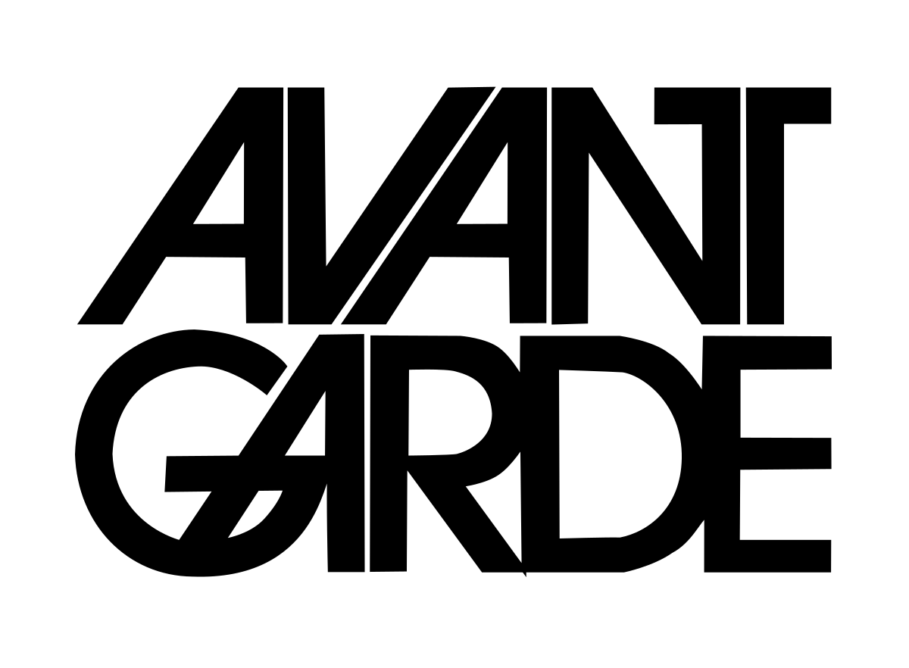
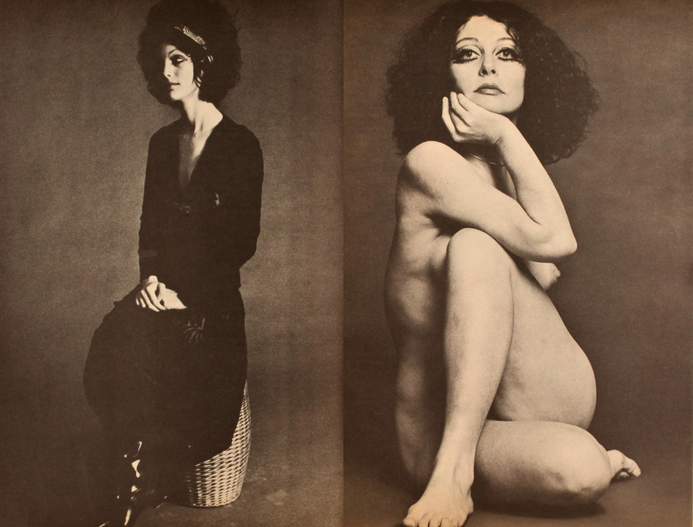

About five o’clock our procession of three cars reached the cemetery and stopped in a thick drizzle beside the gate—first a motor hearse, horribly black and wet, then Mr. Gatz and the minister and I in the limousine, and, a little later, four or five servants and the postman from West Egg in Gatsby’s station wagon, all wet to the skin. As we started through the gate into the cemetery I heard a car stop and then the sound of someone splashing after us over the sog- gy ground. I looked around. It was the man with owl-eyed glasses whom I had found marvelling over Gatsby’s books in the library one night three months before.

He had come a long way to this blue lawn and his dream must have seemed so close that he could hardly fail to grasp it. He did not know that it was already behind him, somewhere back in that vast obscurity beyond the city, where the dark fields of the re- public rolled on under the night. Gatsby believed in the green light, the orgastic future that year by year recedes before us. It eluded us then, but that’s no matter—tomorrow we will run faster, stretch out our arms farther.... And one fine morning—— So we beat on, boats against the current, borne back ceaselessly into the past.

Andu's Girls
Andu's Girls
LETTER TO
THE EDITOR
EDITORIAL
OPINION
MUSIC
ARTISTS
PHOTOS
POLITICS
FASHION